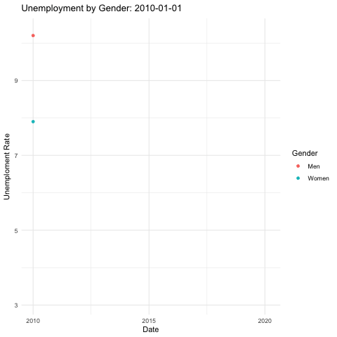

Summary Report: What demographic factors best explain unemployment trends across NYC?
What does unemployment look like over time?
This animated map provides a clear and intuitive answer to the question “What does unemployment look like over time?” by offering a visual representation of unemployment trends across the United States from one year to the next. The map uses color shading to show the unemployment rate for each state, with darker shades indicating higher unemployment and lighter shades representing lower rates. By watching the animation, viewers can easily observe how unemployment changes over time, on a national and state level. The animation highlights major patterns, such as regions that experience persistently high or low unemployment and significant countrywide shifts, such as in 2020, which we know can be attributed to the COVID-19 pandemic. This visual contributes to our overarching question in a fashion of not visually showcasing the “what” of unemployment trends but specifically the “where” and “when”.
This visualization is the same data as the animated visualization - average yearly unemployment rates for each state and the United States overall from 2011 to 2022. This visualization draws focus to New York and the Countrywide average through the red and black lines, respectively. This layered design makes it easy to compare New York’s performance against the broader trends at both the state and national levels. This chart shows a steady decline in unemployment across most states, including New York, from 2011 until 2020. The sharp spike in 2020 reflects the impact of the COVID-19 pandemic, which we have now seen several times throughout the data.
An interesting result is how closely New York’s average unemployment follows the countrywide unemployment rates up until 2020, when the pandemic took place. Many of us were a part of, or know of, the drastic economic effect the pandemic had on New York City, which encompasses much of the population and economy of New York state. We also see that, since then, New York has still remained above the countrywide unemployment level, which can perhaps be attributed to the post-pandemic continued attempt at economic recovery. This visualization highlights unemployment rates over time for black, white and the countrywide average groups, which we find in other visualizations as well. This visual specifically highlights the gaps between each group’s rates and the national average with dashed lines. The blue line for Black unemployment rates consistently remains above both the national average (grey line) and White unemployment rates (red line), illustrating a persistent disparity.
This analysis contributes to our overall study by showcasing the persistent impact of race as a key factor in unemployment disparities. While this chart focuses on nationwide data, it provides a framework for understanding how similar trends might manifest within NYC. Identifying such disparities at the national level sets the stage for further analysis to explore whether similar racial gaps exist in NYC’s unemployment data, helping to answer the overarching question about the demographic factors driving these trends.
This visual ties in with the visual we see above, providing a numeric display of the difference between black and white unemployment rates, from 2011 to 2022. At the bottom of the table displays the average difference across all years, of 4.72%. This gap is wider than the 2.9% difference found in Q2 2024 from the study conducted by the Economic Policy Institute.
This visualization explores one of the three demographic factors, race, which we chose to explore as an attempt at drawing conclusions to our overarching question of what demographic factors best explain NYC’s unemployment trends.
This visual gives us insight into the unemployment trends across racial groups in the United States from 2011 to 2022, and perhaps sheds light to how unemployment disproportionately impacts marginalized groups.
The gray line represents the countrywide average unemployment rate, displayed prominently for context. The colored lines represent unemployment trends for specific racial groups: Black (blue), Hispanic (orange), White (red), and Asian (green). The chart reveals several insights. First, unemployment rates for Black individuals consistently remain higher than those for other groups and the countrywide average. Hispanic unemployment rates generally follow a similar trajectory but at slightly lower levels. On the other hand, Asian and White unemployment rates tend to stay below the countrywide average, indicating comparatively lower unemployment levels for these groups overall.
This gives us our first into race as one of our three demographic factors we continue to explore through each analytical question.
We find that, when we take each of the available races (black, hispanic, and white) and compare against the men’s countrywide unemployment rate, the exact same trends follow to the racial unemployment rate v countrywide overall (without crossing with gender). Consistently, the black unemployment rate is the highest, followed by hispanic, with the countrywide average falling below, followed by the white unemployment rate falling below the countrywide average.
Again, when looking at the same available race x gender unemployment rates (black, hispanic, and white), women follow the same trend as races in general and men x race. This overwhelmingly displays the racial disparity in unemployment rates, which we continue to look into further throughout the project.
What demographic groups are most impacted by unemployment?
n this section, we will delve into the demographic groups most impacted by unemployment, drawing connections to the broader unemployment landscape in New York. Specifically, we will examine key demographic categories such as Race and Educational Attainment while investigating potential underlying factors that may serve as root causes influencing these variables. This analysis aims to uncover deeper insights into the socioeconomic dynamics shaping unemployment trends in the region.
First let’s see what the variables look like over time. Let’s start with Race.
As you can see there is an overall decrease in Unemployment over time with a slight hint at upward movement at the year 2020 (COVID -19 bump). We can also see that there are certain races that start, and stay higher all the way to the end of the timeline. Specifically the Black group, with the Hispanic group underneath it but still higher than the rest. Another interesting point from this graphic is how straight and narrow the line for White race is, especially when compared to the spread of the other groups which seem to form a thick band. Moving on to the demographic we have gender.

As you can see from this plot the Male scatter starts at a higher intercept and converges into the same scatter. This is an interesting output as one would conventionally assume that women would face more adversity in the workplace.
Next we look at the education variable:
Here we see interestingly, that as expected the lower education groups have a higher unemployment, but as the time goes on they get closer and closer. While this shows us that unemployment is still quite different among educational groups, we see that over time the difference might be fading, indicating that there might be more opportunities now for people with less educational attainment.
Next we’ll look at the averages of all the groups side by side.

We see above that Race, in this case black, and Education (primary school) have the highest average unemployment rate. The fact that these two are the highest leads me to believe that there might be a correlation here and perhaps, education is the true underlying factor here that is driving these other groups to have higher levels of unemployment. To dig a bit deeper I will look at the number of men in each race with at least a bachelor’s degree. After obtaining that we can filter down the for the boroughs, and make a proportion of at least a bachelor’s degree using the races respective total population.
You can see that the black and then Latino group is significantly lower than the White group. This aligns well with the unemployment by race as Black and Latino were the top 2 highest unemployment see above, however black is slightly higher than Latino which was unexpected. Let’s see how this comparison looks geographically.
We can see that there is a good amount of overlap here with the black population and portion of lower education. We can also build a regression model to see which groups contribute to unemployment the most.
What areas of New York are most affected by unemployment?
Unemployment rates across NYC largely follow the same trend as the rest of the US, peaking during uncertain and turbulent times. During the Covid pandemic, the already higher trending unemployment in the Bronx was 3 times higher yet compared to the pre-pandemic levels. But even Manhattan, a much more advantaged area, experienced a significant spike in unemployment rate.
There are observable differences in unemployment across boroughs, with Bronx rates consistently trending higher than in other boroughs.

But NYC boroughs are populous and large. For example, Brooklyn alone is the fourth most populous city not even in New York state but in the entire country. It’s not only big - it’s also very diverse. Within each borough, there are multiple neighborhoods that greatly differ from each other in a number of ways.
Unemployment rate in Greenpoint, one of the more affluent areas in Brooklyn, is almost 3 percentage points lower than the average for the county, whereas in Bushwick and Williamsburg it’s 2 percentage points above the average. And we see this in each and every borough.
What factors affect unemployment in New York?
In this part of the project, we focused on some of New York’s demographics data to find what factors affect unemployment in New York. After gathering data from FRED and Census, we created a regression model using some of the variables explored earlier. The regression model helped us identify which of the demographic characteristics have a strong relationship with unemployment in New York and can therefore be used to estimate the unemployment rate of an area of New York with a given demographic split of the population.
Based on our understanding of the demographic characteristics and the regression model created, we found that the level of education is one of the most important factors related to unemployment in New York. We believe this makes sense given that the more education an individual has, the more opportunities that individual might have given some jobs require certain levels of education. Also, education level is something that can be changed for almost any individual regardless of other factors such as age and gender. However, it is important to note that there are many important characteristics that could impact unemployment, but the scope of this project is demographic factors.
In the following graph we can see that the unemployment rate estimated by our model based on the demographic factors selected aligns with the actual unemployment rate seen in our data. Furthermore, we found that the demographic characteristics selected help explain 96% of the variability in New York’s unemployment rate.